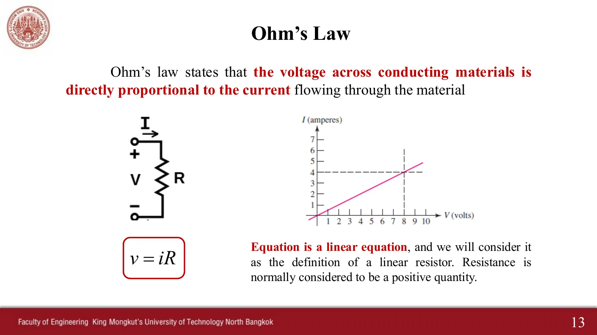
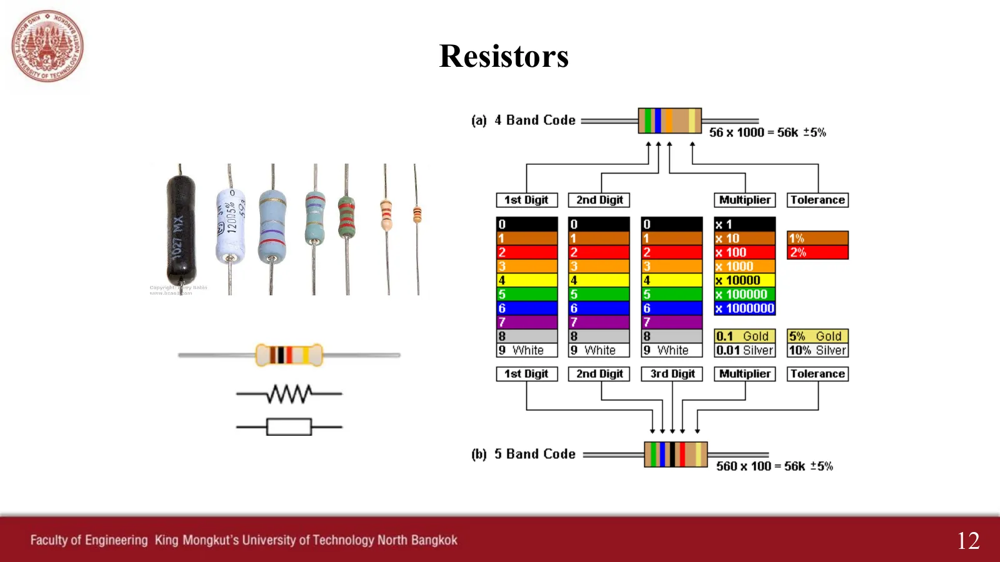
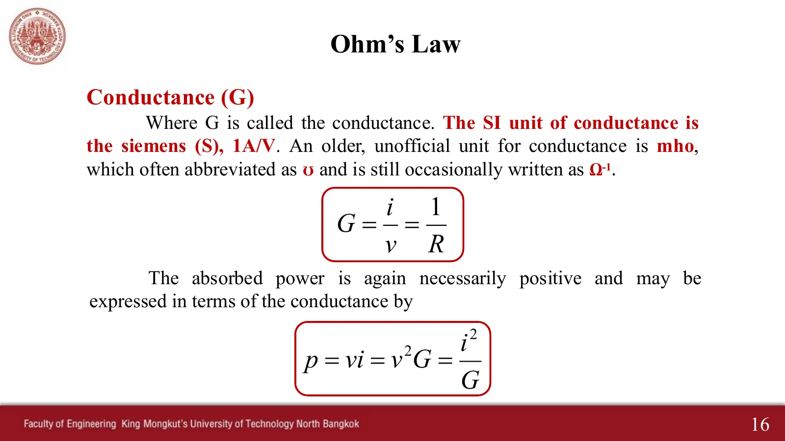
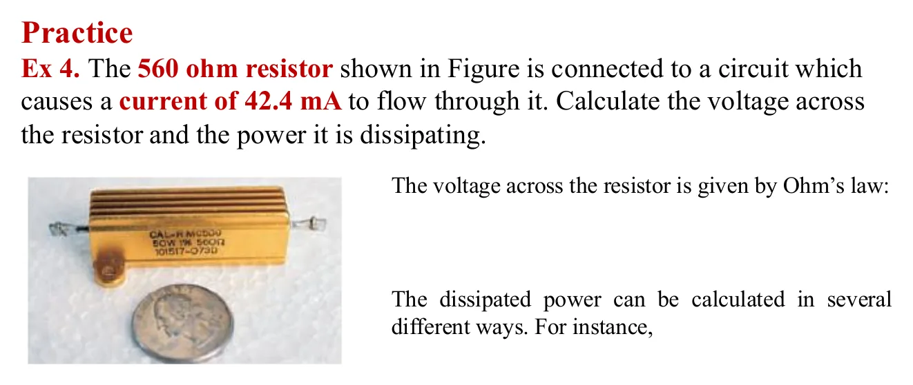
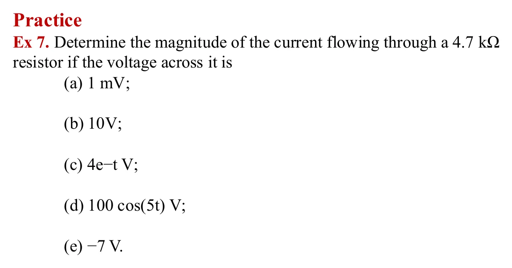

ตัวต้านทาน กฎของโอห์ม และความนำ Resistors, Ohm's law and conductance — a straight line through the origin
Resistors, Ohm's law and conductance A straight line through the origin

กฎของโอห์ม: แรงดันคร่อมตัวนำแปรตามกระแสที่ไหลผ่านโดยตรง \(v = iR\) กราฟ \(i\)–\(v\) ของตัวต้านทานเชิงเส้นจึงเป็นเส้นตรงผ่านจุดกำเนิด ความชันคือความนำ \(G = 1/R\) หน้านี้มี เครื่องมือ 2 ชิ้น (A, B) และ Ex 4 กับ Ex 7 (ห้าข้อย่อย) แยกทีละข้อ แต่ละข้อมีวงจรของตัวเองที่กระแสจะไหลเมื่อคำนวณเสร็จ
Ohm's law: the voltage across a conductor is directly proportional to the current through it, \(v = iR\), so a linear resistor's \(i\)–\(v\) graph is a straight line through the origin whose slope is the conductance \(G = 1/R\). This page has 2 tools (A, B) and Ex 4 and the five parts of Ex 7, one at a time, each with its own circuit whose current flows once you have worked it out.
ประเด็นสำคัญของหน้านี้
- \(v = iR\): กราฟ \(i\)–\(v\) เป็นเส้นตรงผ่านจุดกำเนิด ความชันคือ \(G = 1/R\) หน่วยซีเมนส์ (S)
- \(p = vi = i^2R = v^2/R \ge 0\): ตัวต้านทานรับกำลังเสมอ ไม่เคยจ่ายคืน
- แถบสี: ตัวเลข ตัวเลข (ตัวเลข) ตัวคูณ ความคลาดเคลื่อน
- อย่าปัดเลขกลางทาง เก็บเลขนัยสำคัญไว้จนถึงคำตอบสุดท้าย
Key points of this page
- \(v = iR\): the \(i\)–\(v\) graph is a straight line through the origin with slope \(G = 1/R\), in siemens (S).
- \(p = vi = i^2R = v^2/R \ge 0\): a resistor always absorbs power and never gives it back.
- Colour code: digit, digit, (digit), multiplier, tolerance.
- Do not round halfway; keep significant figures until the final answer.
ตัวต้านทานและแถบสี (สไลด์หน้า 12)
Resistors and the colour code (slide p. 12)

เครื่องมือ: ถอดรหัสแถบสีตัวต้านทาน
Tool: read a resistor's colour code
กฎของโอห์ม กำลัง และความนำ (สไลด์หน้า 13, 14, 16)
Ohm's law, power and conductance (slides pp. 13, 14, 16)


กราฟ \(i\)–\(v\): เส้นตรงผ่านจุดกำเนิด
The \(i\)–\(v\) graph: a straight line through the origin
อ่านค่า
Readings
\(R\) น้อย = เส้นชัน = นำไฟฟ้าดี (\(G\) มาก) · กำลังเป็นบวกเสมอไม่ว่าแรงดันจะเป็นบวกหรือลบ เพราะ \(p = v^2/R\) ตัวต้านทานดูดกลืนกำลังอย่างเดียว
Small \(R\) = steep line = good conductor (large \(G\)) · the power is always positive, whether the voltage is positive or negative, because \(p = v^2/R\). A resistor only absorbs power.
Ex 4: ตัวต้านทานกำลัง 560 Ω มีกระแส 42.4 mA
Ex 4: a 560 Ω power resistor carrying 42.4 mA

ดูเฉลยที่ผู้สอนเขียนในห้อง (สไลด์หน้า 15)See the teacher's in-class working (slide p. 15)
Ex 7: กระแสผ่านตัวต้านทาน 4.7 kΩ เมื่อแรงดันเป็นแบบต่าง ๆ (สไลด์หน้า 20)
Ex 7: current through a 4.7 kΩ resistor for different voltages (slide p. 20)

ห้าข้อย่อยแยกกัน แต่ละข้อมีวงจรของตัวเอง ตัวต้านทานไม่มีหน่วยความจำ กระแสจึงเปลี่ยนตามแรงดันทันทีในรูปเดียวกัน (สังเกตข้อ c และ d)
Five separate parts, each with its own circuit. A resistor has no memory, so the current follows the voltage at once, in the same shape (watch parts c and d).
ดูเฉลยที่ผู้สอนเขียนในห้อง (สไลด์หน้า 20)See the teacher's in-class working (slide p. 20)
ลองทำดู 1 — เส้นตรงผ่านจุดกำเนิด
- เครื่องมือ B: เลื่อนแรงดันจากลบไปบวก จุดทำงานเลื่อนบนเส้นตรงเส้นเดียว เมื่อแรงดันติดลบ จุดในวงจรวิ่งกลับทิศ
- กำลังเป็นบวกเสมอ เพราะ \(p = v^2/R\)
ลองทำดู 2 — แรงดันแปรตามเวลา
- Ex 7(c): กระแสลดลงแบบเอกซ์โพเนนเชียลพร้อมแรงดัน จุดค่อย ๆ ช้าลงจนแทบหยุด
- Ex 7(d): จุดแกว่งไปกลับทุก \(2\pi/5 \approx 1.26\) s จุดทำงานวิ่งขึ้นลงบนเส้นเดิม ไม่ล่าช้า
ลองทำดู 3 — ค่าจริงไม่ตรงค่าที่เขียน
- เครื่องมือ A: น้ำตาล-ดำ-แดง-ทอง = 1 kΩ ±5% ตัวจริงอาจเป็นค่าใดก็ได้ระหว่าง 950 ถึง 1050 Ω (Hayt ข้อ 2.39)
- คำถาม: ตัวต้านทาน 560 Ω ใน Ex 4 รับได้ 50 W ถ้ากระแสเพิ่มเป็น 0.4 A จะยังปลอดภัยหรือไม่
Try this 1 — a line through the origin
- Tool B: slide the voltage from negative to positive: the operating point moves along a single straight line; with a negative voltage the dots run the other way.
- The power is always positive, because \(p = v^2/R\).
Try this 2 — time-varying voltages
- Ex 7(c): the current decays exponentially with the voltage, and the dots slow down almost to a stop.
- Ex 7(d): the dots swing back and forth every \(2\pi/5 \approx 1.26\) s; the operating point runs up and down the same line, with no lag.
Try this 3 — the real value is not the printed value
- Tool A: brown-black-red-gold = 1 kΩ ±5%; the actual part can be anything from 950 to 1050 Ω (Hayt problem 2.39).
- Question: the 560 Ω resistor in Ex 4 is rated 50 W. If the current rose to 0.4 A, would it still be safe?